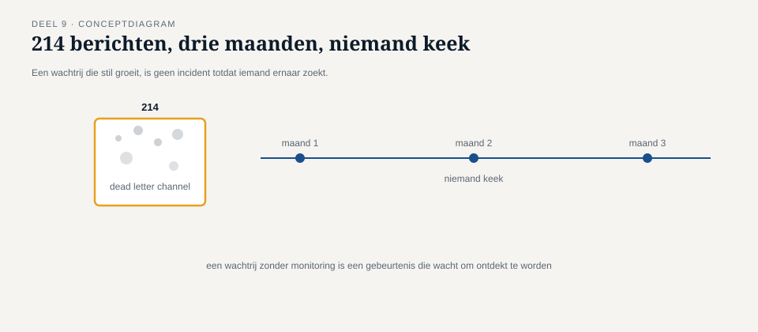

Deel 9 — Foutafhandeling basis: dead letter channel en invalid message channel
Reader · Ductus-cursus Enterprise Integration Patterns · niveau 1 (fundament) · deel 9 van 10
9.0 Het bericht dat nergens stond
Vier maanden na de start van de herbouw ontdekte Caspar, bij toeval tijdens een capaciteitscontrole van de messaging-infrastructuur, een oude wachtrij met 214 berichten die niemand kende. Ze waren daar, bleek na onderzoek, in de loop van drie maanden beland: elke keer wanneer een verwerker een bericht niet kon afhandelen — een ontbrekend verplicht veld, een deelnemersnummer dat niet bestond, een tijdelijke storing bij de externe administrateur die de ingebouwde retry-limiet overschreed — had de messaging-technologie het bericht, na het bereiken van die limiet, automatisch naar een standaard, technische foutwachtrij verplaatst. Niemand had die wachtrij ooit geconfigureerd om te monitoren. Niemand wist dat hij bestond.
Onder de 214 berichten zaten zeven salariscorrecties en twaalf adreswijzigingen die, voor zover iedereen wist, gewoon "verwerkt" waren — het portaal had immers een ontvangstbevestiging getoond zodra het bericht op het kanaal stond, precies zoals deel 3 voorschrijft. Niemand had ooit teruggekoppeld dat de daadwerkelijke verwerking was mislukt, want er was geen mechanisme dat dat deed. De mutaties stonden er gewoon, onopgemerkt, wachtend op niets.
Dit is de slechtst mogelijke uitkomst van foutafhandeling: niet een zichtbare fout, maar stille verdwijning. Dit deel behandelt de twee patronen die dat structureel voorkomen.

9.1 Twee soorten mislukking, twee patronen
Voordat een oplossing ontworpen kan worden, is het nodig om twee fundamenteel verschillende oorzaken van mislukking te onderscheiden — ze vragen elk een ander patroon, en door elkaar behandelen leidt tot precies het soort ongestructureerde foutwachtrij die bij Caspar werd aangetroffen.
Een bericht is structureel ongeldig. Het voldoet niet aan het verwachte formaat, mist een verplicht veld, of verwijst naar een deelnemersnummer dat niet bestaat. Geen enkele hoeveelheid retries zal dit oplossen — het bericht is fundamenteel niet verwerkbaar zoals het is. Dit hoort bij het invalid message channel, geïntroduceerd in deel 4 als vangnet voor de content-based router.
Een bericht is op zichzelf geldig, maar de verwerking mislukt tijdelijk of onherstelbaar. Een externe partij is onbereikbaar, een database-verbinding valt weg, of een verwerkingsstap loopt op een onvoorziene fout — het bericht zelf is prima gevormd, maar de omstandigheden om het te verwerken zijn (nu, of blijvend) ongunstig. Dit hoort bij het dead letter channel.
Kernzin 9 van de cursus: een structureel ongeldig bericht en een tijdelijk onverwerkbaar bericht zijn twee verschillende problemen — behandel ze niet in dezelfde wachtrij, want de vervolgstap is voor beide anders.
9.2 Het invalid message channel
Het invalid message channel vangt berichten op die niet aan de basisvereisten voldoen om ooit verwerkt te kunnen worden zoals ze zijn — dit is een directe validatiebeslissing, doorgaans genomen vlak na binnenkomst, vóórdat er zinvolle verwerkingslogica op wordt losgelaten.
Drie eigenschappen maken dit kanaal bruikbaar in plaats van een tweede, even onzichtbare stofnest:
Het bericht wordt niet stilzwijgend verworpen. Elk bericht dat hier belandt, is per definitie een teken van iets dat elders misging — een bug in de zender, een verouderd berichtformaat, of een integriteitsprobleem in brongegevens. Het kanaal moet actief gemonitord worden, met alerting, niet passief bewaard "voor het geval iemand ooit kijkt".
Het bericht bevat, naast de oorspronkelijke inhoud, de reden van afwijzing. "Verplicht veld deelnemerId ontbreekt" is bruikbaar; "bericht ongeldig" is dat niet. Zonder een expliciete reden moet iemand die het later onderzoekt, de validatielogica reconstrueren om te snappen wat er misging — tijdverlies dat te voorkomen is door de reden meteen vast te leggen op het moment dat hij bekend is.
Er is een eigenaar die verantwoordelijk is voor opvolging. Niet noodzakelijk dezelfde persoon die het technisch bouwt, maar iemand die periodiek beoordeelt: is dit een eenmalige afwijking, een structureel patroon dat op een bug wijst, of een teken dat de bronapplicatie zelf gerepareerd moet worden?
Bij Meridiaan is, ná het incident van 9.0, het invalid message channel gekoppeld aan een dagelijks overzicht voor het integratieteam: aantal berichten, uitgesplitst naar reden, met een trend ten opzichte van de vorige week. Een plotselinge toename van "onbekend deelnemersnummer" bleek binnen twee weken een vroegtijdig signaal te zijn van een probleem in de aanlevering vanuit het zelfbedieningsportaal (deel 5), lang voordat een gebruiker er zelf over klaagde.
9.3 Het dead letter channel
Het dead letter channel vangt berichten op die geldig gevormd zijn, maar waarvan de verwerking is mislukt ondanks een redelijk aantal pogingen. "Redelijk aantal pogingen" is met opzet vaag: het juiste aantal retries, en de tijd ertussen, hangt af van de aard van de fout en moet bewust worden gekozen, niet standaard op een technologiedefault worden gelaten — precies de fout die bij Meridiaan drie maanden lang onopgemerkt bleef.
Twee ontwerpbeslissingen bepalen of een dead letter channel houdbaar is:
Retry-strategie vóór het dead letter channel. Niet elke mislukking verdient hetzelfde aantal pogingen op dezelfde termijn. Een tijdelijke netwerkstoring bij de externe administrateur rechtvaardigt een paar pogingen met oplopende tussenpozen (exponential backoff, technologie-onafhankelijk het principe van "wacht steeds langer tussen pogingen om een overbelast systeem niet te verergeren"). Een structurele fout, zoals een verkeerd geconfigureerd wachtwoord bij de externe partij, zal ook na honderd pogingen niet slagen — hier is het zinvoller om na een klein aantal pogingen snel te falen en het bericht naar het dead letter channel te sturen, zodat een mens het kan onderzoeken in plaats van de infrastructuur onnodig te belasten met kansloze retries.
Actieve monitoring en een expliciet herstelpad. Net als bij het invalid message channel is een dead letter channel zonder monitoring gewoon een tweede stofnest. Het verschil met het invalid message channel is het herstelpad: een structureel ongeldig bericht moet meestal aan de bron worden gecorrigeerd (de zender moet het opnieuw, correct, aanleveren); een dead-lettered bericht kan vaak, na het oplossen van de onderliggende oorzaak (de externe partij is weer bereikbaar, het wachtwoord is gecorrigeerd), gewoon opnieuw worden aangeboden aan het oorspronkelijke kanaal — een replay. Dit vraagt wel dat het bericht, en de idempotentiemaatregelen uit deel 7, geschikt zijn voor herverwerking na een vertraging: als de oorspronkelijke bericht-ID nog is bewaard, is een replay net zo veilig als de eerste poging ooit was.

9.4 Waarom stille verdwijning de slechtste uitkomst is
Het is de moeite waard om expliciet stil te staan bij waarom "het bericht verdwijnt gewoon" erger is dan "het bericht mislukt zichtbaar" — dit lijkt evident maar wordt in de praktijk stelselmatig onderschat, precies omdat een verdwenen bericht per definitie geen signaal geeft dat er iets mis is.
Bij een zichtbare fout (een foutmelding op het scherm, zoals in de synchrone wereld van deel 1) weet de gebruiker onmiddellijk dat er iets misging en kan hij het opnieuw proberen of hulp inroepen. Bij messaging, waar deel 3 juist pleitte voor een asynchrone ontvangstbevestiging in plaats van blokkerend wachten, ontstaat een risico dat deel 3 niet expliciet benoemde: de gebruiker ziet een bevestiging ("ontvangen") en neemt aan dat de rest ook goed komt. Als die aanname niet wordt waargemaakt — en zonder dead letter channel en invalid message channel wordt hij dat niet — ontstaat precies de situatie van 9.0: een systeem dat zich overal betrouwbaar voordoet, terwijl het intern stilletjes berichten verliest.
De sluitende les van niveau 1: elke garantie uit dit niveau (deel 7 en 8) is zinloos als het falen ervan onzichtbaar blijft. Dead letter channel en invalid message channel zijn niet optioneel opsmuk — ze zijn de plek waar je erachter komt of je garanties daadwerkelijk werken.
Samenvatting van deel 9
- Twee verschillende soorten mislukking vragen twee verschillende patronen: structureel ongeldige berichten horen bij het invalid message channel, tijdelijk of onherstelbaar mislukte verwerking bij het dead letter channel.
- Een invalid message channel bewaart de reden van afwijzing, wordt actief gemonitord, en heeft een eigenaar die opvolging verzorgt.
- Een dead letter channel vereist een bewuste retry-strategie (aantal pogingen, backoff) vóór berichten daar belanden, plus een expliciet herstelpad — vaak replay na het verhelpen van de onderliggende oorzaak.
- Stille verdwijning van een bericht is de slechtste mogelijke uitkomst: het ondermijnt elke garantie uit deel 7 en 8 zonder dat iemand het merkt.
Vooruitblik
Deel 10 sluit niveau 1 af met examentraining: een integrale toetsing van alle negen voorgaande delen aan de hand van de volledige mutatieketen die door dit niveau heen is gebouwd, en de voorbereiding op het certificeringslandschap uit paragraaf 1 van deel 1.